Module 12 · Bounds and limits of state discrimination
Helstrom bound, fidelity, trace distance, unambiguous discrimination and the square-root measurement
- Compute the Helstrom bound \(P_e=\tfrac12(1-D)\) for pure and mixed states
- Use \(1-F\le D\le\sqrt{1-F^2}\) to sandwich \(P_e\)
- Distinguish three strategies: minimum error, unambiguous, maximum confidence
- Use the SRM and its near-optimal bounds
📚 Source documents of this module (each file checked against its actual content)
| File in the archive | Paper (verified against its content) | Pages | Status | Used in this module |
|---|---|---|---|---|
| Peres_Wootters_1991_Optimal_Detection.pdf | Classical interventions in quantum systems. I. The measuring process A. Peres · 2000 · Phys. Rev. A 61, 022116 | 14 | Wrong file: content does not match the title | The file name says Peres-Wootters 1991 (optimal detection) but the content is a Peres paper on the measuring process; no content quoted. |
| Barnum_Knill_2002_Reversing_Quantum_Dynamics.pdf | Reversing quantum dynamics with near-optimal quantum and classical fidelity H. Barnum, E. Knill · 2002 · arXiv:quant-ph/0004088 | 15 | Read, title matches | Theorem 3 (p. 7), PGM (pp. 10-11), Eq. (39). |
| Fuchs_vandeGraaf_1999_Cryptographic_Distinguishability.pdf | Cryptographic distinguishability measures for quantum mechanical states C. A. Fuchs, J. van de Graaf · 1999 · arXiv:quant-ph/9712042 (IEEE Trans. Inf. Theory) | 28 | Read, title matches | Eqs. (17), (21), (24), (43)-(48), Figures 1-2. |
| Barnett_Croke_2009_Quantum_State_Discrimination.pdf | Quantum state discrimination S. M. Barnett, S. Croke · 2009 · Adv. Opt. Photon. 1, 238 (arXiv:0810.1970) | 43 | Partly read (long book) | Read Sections 3.1-3.6 and Section 4 (pp. 5-36); reference list used for the timeline. |
| Yuen_Kennedy_Lax_1975_Optimum_Testing.pdf | Optimum testing of multiple hypotheses in quantum detection theory H. P. Yuen, R. S. Kennedy, M. Lax · 1975 · IEEE Trans. Inf. Theory 21, 125-134 | ? | No extractable text | The 244-byte file is a "Request Rejected" page with no content; cited only through other papers. |
| Chefles_2000_Quantum_State_Discrimination_Review.pdf | Quantum state discrimination A. Chefles · 2000 · Contemp. Phys. 41, 401 (arXiv:quant-ph/0010114) | 27 | Read, title matches | Eqs. (2.6)-(2.10), (3.5); FIG. 1, 3, 6. |
| Bergou_2007_Tutorial_Review.pdf | Quantum state discrimination and selected applications J. A. Bergou · 2007 · J. Phys.: Conf. Ser. 84, 012001 | 19 | Read, title matches | Eqs. (20)-(26), (37)-(42); Figure 1. |
Lecture (slides)
Use the ← → keys or the buttons; ⛶ opens full-screen presentation.
The two-state discrimination problem
- \(\rho_0,\rho_1\)the two known states, sent with probabilities \(p_0,p_1=1-p_0\)
- \(\Pi_k\)POVM element; outcome \(k\) means guessing \(\rho_k\)
For pure states and a single operator \(\Pi_0\), \(P_e=p_0-\mathrm{Tr}\bigl[(p_0|\psi_0\rangle\langle\psi_0|-p_1|\psi_1\rangle\langle\psi_1|)\Pi_0\bigr]\), thanks to completeness \(\Pi_0+\Pi_1=\mathbb 1\) (Eq. (9), Barnett & Croke 2009, p. 5).
| Classical | Quantum |
|---|---|
| \(P_e=\tfrac12\sum_x\min\{p_0(x),p_1(x)\}\) | \(P_e=\min_{\{\Pi\}}P_e(\{\Pi\})\) |
| Bayes: pick the largest posterior | Bayes plus optimisation of the measurement |
The Helstrom formula for mixed states
- \(\Lambda=p_1\rho_1-p_0\rho_0\)Hermitian operator with eigenvalues \(\lambda_k\) of both signs
- \(\mathrm{Tr}|\Lambda|\)sum of the absolute eigenvalues
The optimal measurement projects onto the positive and negative eigenspaces of \(\Lambda\). Then \(P_e=p_1-\sum_{\lambda_k>0}\lambda_k=p_0+\sum_{\lambda_k<0}\lambda_k\); adding both forms and using \(p_0+p_1=1\) gives the formula above (Eqs. (37)-(39), Bergou 2007, pp. 12-13).
Two pure states and the optimal von Neumann measurement
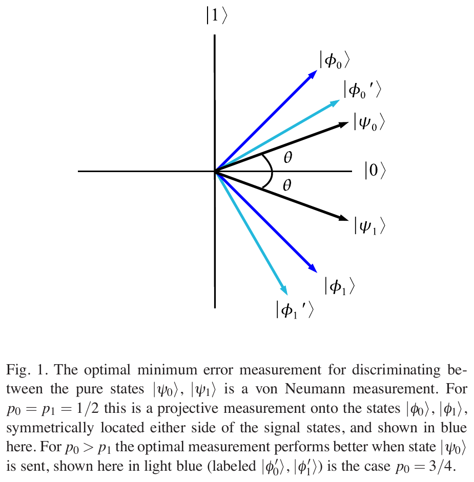
Source: Barnett & Croke 2009, Fig. 1, p. 6
- \(\lambda_\pm\)\(\tfrac12\bigl(p_0-p_1\pm\sqrt{1-4p_0p_1\cos^2 2\theta}\bigr)\)
Take \(|\psi_{0,1}\rangle=\cos\theta|0\rangle\pm\sin\theta|1\rangle\) (Eqs. (10)-(12), p. 6). For \(p_0=p_1=\tfrac12\) the measurement projects onto \(|\phi_{0,1}\rangle=(|0\rangle\pm|1\rangle)/\sqrt2\) (Eq. (13)).
Angle geometry: \(P_e=\tfrac12(1-\sin 2\theta)\)
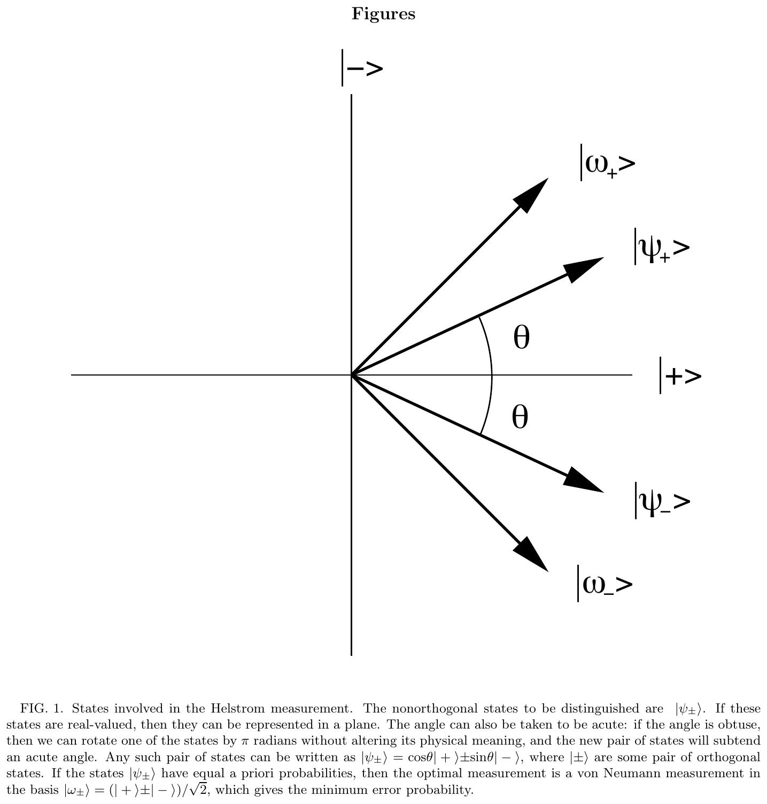
Source: Chefles 2000, FIG. 1, p. 1
- \(\langle\psi_+|\psi_-\rangle\)\(\cos 2\theta\)
- \(|\omega_\pm\rangle\)\((|+\rangle\pm|-\rangle)/\sqrt2\)
Since \(|\langle\psi_+|\psi_-\rangle|^2=\cos^2 2\theta\), we get \(\sqrt{1-\cos^2 2\theta}=\sin 2\theta\) (Eqs. (2.6)-(2.10), pp. 4-5). As the angle \(2\theta\) between the states approaches \(\pi/2\), \(P_e\) goes to 0.
Trace distance and the error probability
- \(D\)0 for identical states, 1 for orthogonal states
- \(P_e\)Eqs. (17) and (21): \(P_E=\tfrac12-\tfrac12K\) with \(K=D\)
| \(D\) | 0 | 0.25 | 0.5 | 0.75 | 1 |
|---|---|---|---|---|---|
| \(P_e=\tfrac12(1-D)\) | 0.5 | 0.375 | 0.25 | 0.125 | 0 |
\(D\) is the maximum over measurements of the classical distance: \(K(\rho_0,\rho_1)=\max_E K(p_0(E),p_1(E))\) (Eq. (20), Fuchs & van de Graaf 1999, p. 12).
Fidelity and the overlap coefficient
- \(F\)equals the quantum Bhattacharyya coefficient \(B(\rho_0,\rho_1)\), Eqs. (24) and (26), p. 13
- \(\varphi_k\)purifications of \(\rho_k\)
| Case | \(F\) |
|---|---|
| two pure states | \(|\langle\psi_0|\psi_1\rangle|\) |
| pure \(|\psi\rangle\) and mixed \(\sigma\) | \(\sqrt{\langle\psi|\sigma|\psi\rangle}\) |
| BPSK \(|\pm\alpha\rangle\) | \(e^{-2|\alpha|^2}\) |
\(F\) is multiplicative over tensor products: \(F(\rho_0\otimes\rho_1,\rho_2\otimes\rho_3)=F(\rho_0,\rho_2)F(\rho_1,\rho_3)\) (Eq. (27)).
The Fuchs-van de Graaf inequalities
- \(1-F\)lower bound on \(D\)
- \(\sqrt{1-F^2}\)upper bound, tight when both states are pure
The right side follows from \(P_e=\tfrac12(1-D)\) and \(D\ge1-F\); the left side from \(D\le\sqrt{1-F^2}\) (derived from Eqs. (17) and (46), Fuchs & van de Graaf 1999, p. 17).
Proof of the left side: \(1-F\le D\)
- \(B\)\(\sum_x\sqrt{p_0(x)p_1(x)}\)
- \(K\)Kolmogorov distance
- \(E_B\)measurement minimising \(B\)
- \(E_K\)measurement maximising \(K\)
Two extremal choices do the work: \(E_B\) gives exactly \(F\), \(E_K\) gives exactly \(D\), so the inequality carries over (Fuchs & van de Graaf 1999, pp. 17, 20).
Proof of the right side: \(D\le\sqrt{1-F^2}\)
- \(\sum(\sqrt{p_0}\mp\sqrt{p_1})^2\)\(2\mp 2B\)
For two pure states equality is attained: \(D=\sqrt{1-|\langle\psi_0|\psi_1\rangle|^2}\). Check: angle \(0.4\) rad gives \(D=0.389418\) and \(\sqrt{1-F^2}=0.389418\) (m12_verify.py).
Binary entropy and the Shannon bounds
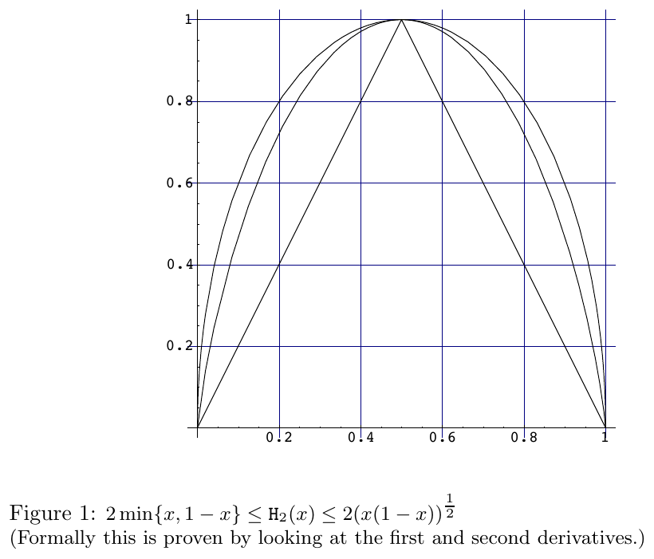
Source: Fuchs & van de Graaf 1999, Figure 1, p. 19
- \(SD\)Shannon distinguishability: optimal mutual information
- \(H_2\)binary entropy
The curve \(2\sqrt{x(1-x)}\) hugs \(H_2\), which is why the bounds in terms of \(F\) are fairly tight (p. 25).
Pure states: where the bound is tight
- \(p_0=p_1=\tfrac12\)equal priors
The second form (Eq. (41), Bergou 2007, p. 13) shows the factor multiplying \(p_{\min}\) is the gain of measuring over simply guessing the more frequent state.
Optimality conditions for M states
- \(\Gamma=\sum_ip_i\rho_i\Pi_i\)Lagrange operator, must be Hermitian and positive
- \(P_{corr}\)\(\sum_ip_i\mathrm{Tr}(\rho_i\Pi_i)\)
Only sufficiency is proven in the paper: for every POM \(\Pi_j'\), \(\sum_j\mathrm{Tr}[(\Gamma-p_j\rho_j)\Pi_j']\ge0\) (Eqs. (18)-(21), Barnett & Croke 2009, p. 8). There is no closed solution in general; only two states, SRM for symmetric sets, or numerics are known (pp. 7-11).
The square-root (pretty good) measurement
- \(\hat\rho^{-1/2}\)inverse square root (on the support)
- \(\sum_i\Pi_i\)\(\mathbb 1\)
For \(N\) symmetric pure states the Cauchy-Schwarz inequality shows condition (16) holds (Eqs. (31)-(32), Barnett & Croke 2009, pp. 9-10). The same definition appears as Eq. (37), Barnum and Knill, p. 10.
Unambiguous discrimination and the IDP limit
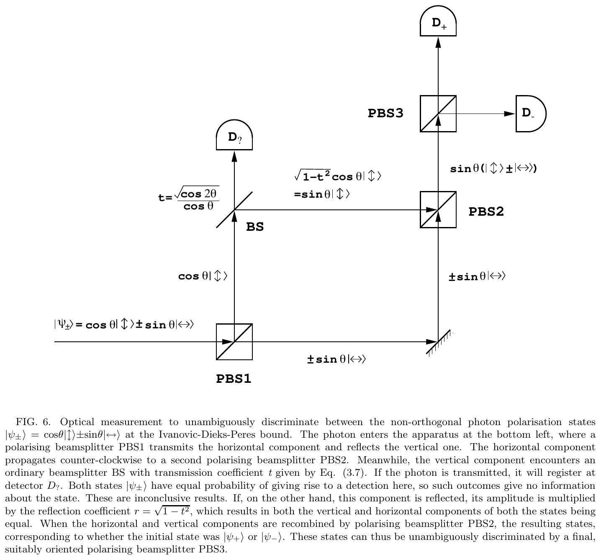
Source: Chefles 2000, FIG. 6, p. 6
- \(a_k\in[0,1]\)coefficients of the two operators \(\Pi_k\)
- \(\Pi_?\)\(\mathbb 1-\Pi_0-\Pi_1\)
Every conclusive outcome is always right; in exchange there is a probability \(P_?\) of no conclusion (Eqs. (36)-(40), Barnett & Croke 2009, pp. 11-12).
Worked numbers: two mixed qubits
- \(\rho_0=\rho(0.9,0.3)\)\(\rho_1=\rho(0.5,1.2)\)
| \(D\) | \(F\) | \(1-F\) | \(\sqrt{1-F^2}\) | \(P_e\) |
|---|---|---|---|---|
| 0.3537 | 0.9103 | 0.0897 | 0.4140 | 0.3231 |
Check: \(0.0897\le0.3537\le0.4140\) holds, and \(P_e=\tfrac12(1-0.3537)=0.3231\) matches the eigenvalues of \(\rho_0-\rho_1\) (numpy; the JS widget agrees, m12_verify.py).
Worked numbers: pure coherent BPSK
- \(\bar n=|\alpha|^2\)mean photon number per pulse
| \(\bar n\) | \(e^{-4\bar n}\) | \(F\) | \(P_e\) |
|---|---|---|---|
| 0.1 | 0.6703 | 0.8187 | 0.2129 |
| 0.25 | 0.3679 | 0.6065 | 0.1025 |
| 0.5 | 0.1353 | 0.3679 | 0.0351 |
| 1.0 | 0.0183 | 0.1353 | 0.0046 |
For \(\bar n=0.5\): \(\sqrt{1-0.1353}=0.9299\), \(P_e=\tfrac12(1-0.9299)=0.0351\), lying between \(\tfrac12(1-\sqrt{1-F^2})=0.0351\) and \(\tfrac12F=0.1839\) (left equality because the states are pure).
Worked numbers: polarisation \(\theta=\pi/6\) and experiment
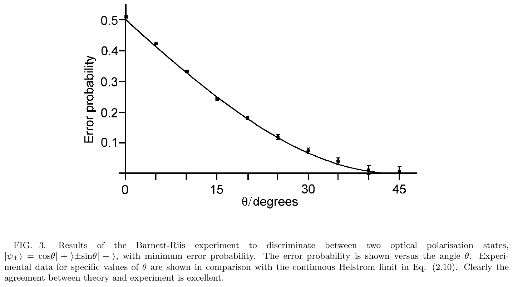
Source: Chefles 2000, FIG. 3, p. 3
The paper quotes about \(6.7\%\) for Helstrom and a \(1.7\%\) error measured on detected events in the Huttner (1996) experiment, pp. 8-9. The two numbers do not contradict: the latter discards inconclusive events.
Worked numbers: unequal priors
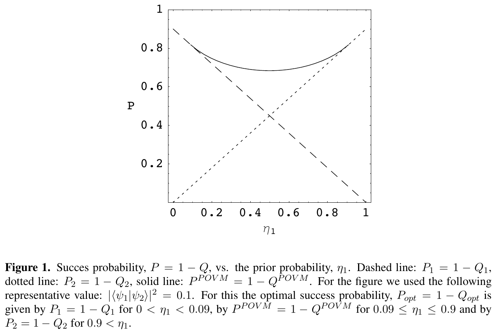
Source: Bergou 2007, Figure 1, p. 10
\(\cos^2\Theta=0.1\): the range of existence is \([0.0909,\,0.9091]\) (the paper writes \([0.09,\,0.9]\)). At \(\eta_1=\tfrac12\): \(Q=\sqrt{0.1}=0.3162\), \(P=0.6838\), while von Neumann gives \(Q_1=\tfrac12+\tfrac12\cdot0.1=0.55\), \(P=0.45\).
Worked numbers: the three-state trine
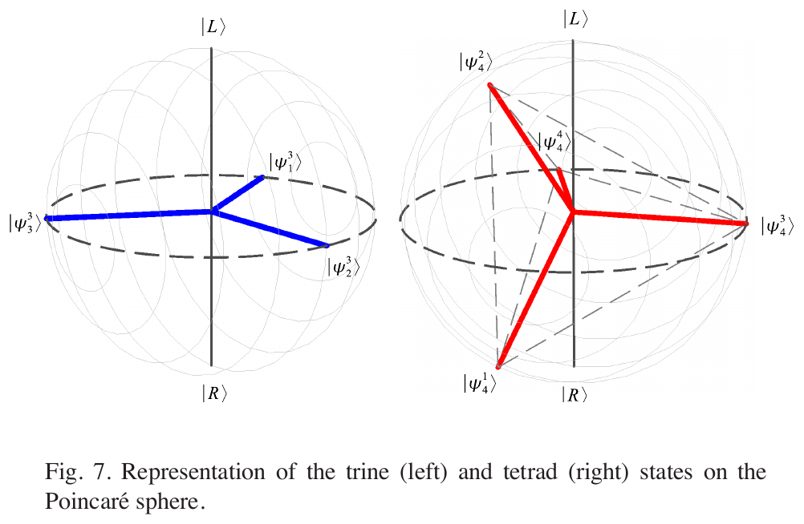
Source: Barnett & Croke 2009, Fig. 7, p. 30
\(\hat\rho=\tfrac13\sum_i|\psi_i\rangle\langle\psi_i|=\tfrac12\mathbb 1\), so \(\Pi_i=\tfrac13\hat\rho^{-1/2}|\psi_i\rangle\langle\psi_i|\hat\rho^{-1/2}=\tfrac23|\psi_i\rangle\langle\psi_i|\). The success probability is \(\tfrac13\sum\langle\psi_i|\Pi_i|\psi_i\rangle=\tfrac23\), \(P_e=\tfrac13\); running the PGM in m12_verify.py gives \(0.3333\).
Worked numbers: minimum error versus maximum confidence
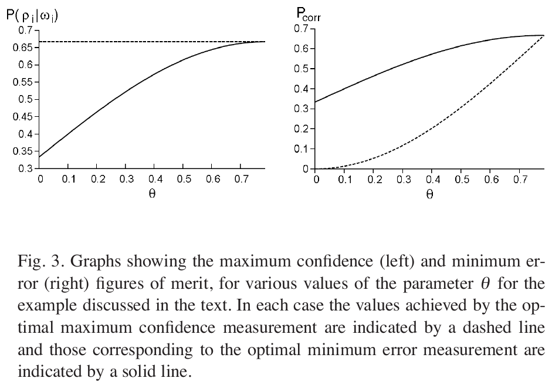
Source: Barnett & Croke 2009, Fig. 3, p. 19
When a conclusive outcome occurs the probability the state is correct is \(\tfrac23\), against \(\tfrac13(1+\sin2\theta)\) for minimum-error (pp. 18-19). At \(\theta=\pi/4\): \(\tfrac13(1+1)=\tfrac23\), the two strategies coincide.
Timeline of the limits of state discrimination
Years and names come from the reference list of Barnett & Croke 2009 (pp. 38-43) and from the papers read; solid: an experiment realising a theoretical result, dashed: influence of ideas.
Trap: \(P_e\) is not a distance
- \(P_e=0\)if and only if the states are orthogonal
| Quantity | Identical | Orthogonal |
|---|---|---|
| \(P_e\) | \(\tfrac12\) | 0 |
| \(D\) | 0 | 1 |
| \(F\) | 1 | 0 |
Trap: \(F\) versus \(F^2\), and loose bounds
- \(1-F\le D\)uses \(F\), not squared
- \(1-F^2\le \sqrt{1-F^2}\)is the upper bound written with \(F^2\)
The bounds can be loose: for mixed states \(D\) may sit near either end. 3000 random pairs never violated them (m12_verify.py).
Bounds for the pretty good measurement
- \(\mathcal R_{A,\rho}\)the near-optimal reversal
- \(1-\bar F_e\)error, at most twice the optimal error
Numerical check on 500 random 3-dimensional pairs: the PGM error never exceeded \(2\times\) the Helstrom error; the largest ratio was \(1.77\) (m12_verify.py).
General upper and lower bounds on \(P_e\)
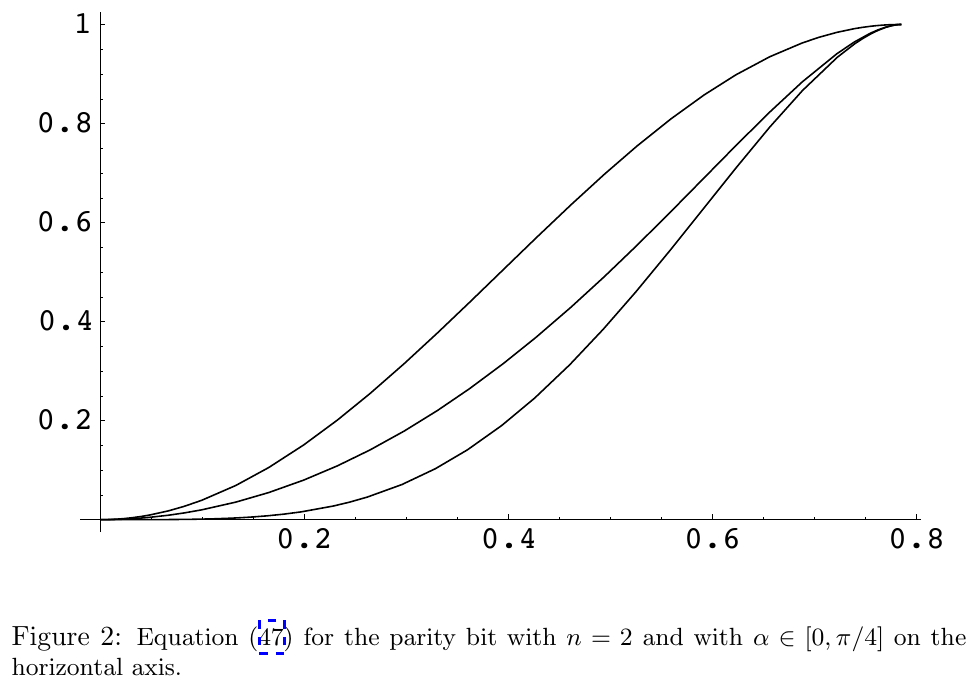
Source: Fuchs & van de Graaf 1999, Figure 2, p. 25
For more than two states the review only notes that both upper [46,47] and lower [48,49] bounds exist, without reproducing them (p. 11).
Application to BPSK through a turbulent channel
- \(I\)Gamma-Gamma intensity
- \(w\)receiver noise
With no turbulence (\(I=1,w=0\)) both states become pure and \(P_e=\tfrac12(1-\sqrt{1-e^{-4\bar n}})\), identical to Module 03. Channel model: Modules 03 and 19.
Bounds as a test for a surrogate model
- \(\hat P_e\)neural-network prediction
- \(F\)computed from the predicted \(\hat\rho_0,\hat\rho_1\)
Experiments reaching the Helstrom and IDP limits
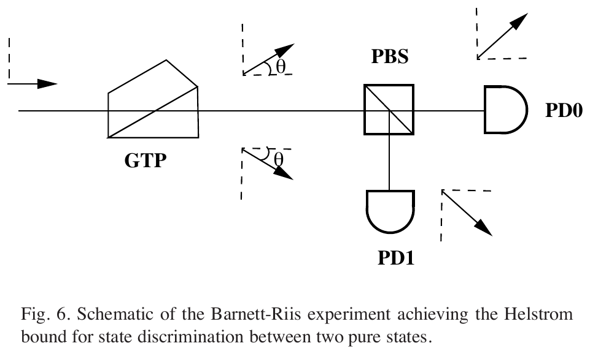
Source: Barnett & Croke 2009, Fig. 6, p. 29
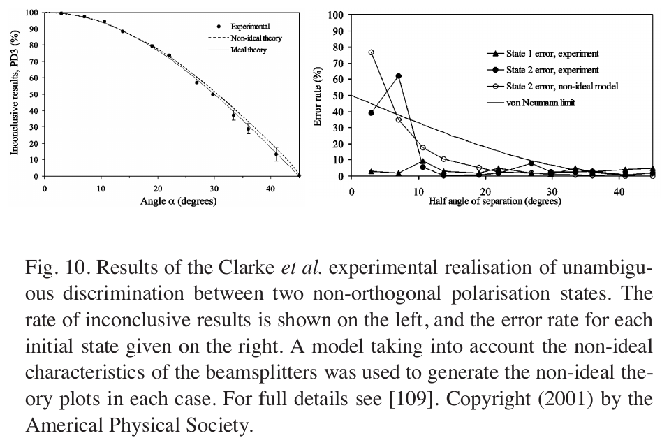
Source: Barnett & Croke 2009, Fig. 10, p. 33
Theory to compare with: \(P_{err}=\tfrac12(1-\sin2\theta)\), \(P_?=\cos2\theta\).
Comparison of three discrimination strategies
| Strategy | Goal | Result (two pure states, equal priors) | Has a "don't know" outcome? |
|---|---|---|---|
| Minimum error | minimise \(P_e\) | \(\tfrac12(1-\sqrt{1-F^2})\) | no |
| Unambiguous | \(P_e=0\) on conclusive events | \(P_?=F\) | yes |
| Maximum confidence | maximise \(P(\rho_i|i)\) | generalises unambiguous | yes |
- \(Q_{opt}\)smallest failure probability of unambiguous discrimination (Bergou 2007, p. 13)
Numbers: for \(\theta=\pi/6\), \(P_e=0.0670\) and \(\tfrac12P_?=0.25\), so the inequality holds. The Bloch picture of both strategies is in Fig. 2, p. 17 of Barnett & Croke 2009.
Limits from the no-signalling principle
No measurement on the left system may change \(\hat\rho_R\). From this follows a tight bound on the inconclusive probability for two pure states without invoking POVMs (pp. 23-24, and the bound for maximum confidence).
Summary: the key formulas
| Quantity | Formula | Source |
|---|---|---|
| Helstrom, mixed | \(\tfrac12(1-\mathrm{Tr}|p_1\rho_1-p_0\rho_0|)\) | Bergou Eq. (39) |
| Helstrom, pure | \(\tfrac12(1-\sqrt{1-4p_0p_1F^2})\) | Barnett-Croke Eq. (12) |
| Trace distance | \(D=\tfrac12\mathrm{Tr}|\rho_0-\rho_1|\) | Fuchs-vdG Eq. (21) |
| Fidelity | \(F=\mathrm{Tr}\sqrt{\sqrt{\rho_0}\rho_1\sqrt{\rho_0}}\) | Fuchs-vdG Eq. (24) |
| Sandwich | \(1-F\le D\le\sqrt{1-F^2}\) | Fuchs-vdG Eq. (46) |
| IDP | \(P_?=|\langle\psi_0|\psi_1\rangle|\) | Chefles Eq. (3.5) |
| SRM | \(\Pi_i=p_i\hat\rho^{-1/2}\rho_i\hat\rho^{-1/2}\) | Barnett-Croke Eq. (22) |
Detailed notes
Theoretical and historical background
The two-state problem starts with Helstrom (Information and Control 10, 1967) and Holevo (J. Multivariate Anal. 3, 1973). Yuen, Kennedy and Lax (IEEE Trans. IT-21, 1975) set up the M-hypothesis problem. The PDF of that paper in the repository is only a rejection page (244 bytes), so the module does not quote from the file and cites it through the reference list of Barnett-Croke (ref. 13). After 1987, Ivanovic, Dieks and Peres showed error-free discrimination is possible if inconclusive results are allowed. Fuchs and van de Graaf (1998) tied four measures together through inequalities.
Worked examples
Step 1: write \(\rho_0=\rho(0.9,0.3)\), \(\rho_1=\rho(0.5,1.2)\). Step 2: \(\rho_0-\rho_1\) is traceless so its eigenvalues are \(\pm\lambda\). Step 3: \(\lambda=0.3537\), \(D=\lambda\), \(P_e=\tfrac12(1-0.3537)=0.3231\). Step 4: \(F=0.9103\); check \(1-F=0.0897\le0.3537\le0.4140=\sqrt{1-F^2}\). (illustration, computed with numpy.)
\(|\langle\alpha|-\alpha\rangle|^2=e^{-4\cdot0.5}=0.1353\); \(\sqrt{1-0.1353}=0.9299\); \(P_e=\tfrac12(0.0701)=0.0351\). A simple photon-counting receiver does worse than this limit; that is the subject of Module 09.
\(p_0=(0.5,0.3,0.2)\), \(p_1=(0.2,0.3,0.5)\) (illustration). \(\sum\min=0.7\), \(P_E=0.35\); \(K=\tfrac12\sum|p_0-p_1|=0.3\) and \(P_E=\tfrac12-\tfrac12K=0.35\) agree. \(B=\sum\sqrt{p_0p_1}=0.9325\): \(1-B=0.0675\le0.3\le\sqrt{1-B^2}=0.3613\), i.e. Proposition 5 (Eq. (43)).
\(P_e=\tfrac12(1-\sin60^\circ)=0.0670\). IDP: \(P_?=\cos60^\circ=0.5\); check \(P_?\ge2P_e=0.134\) (Eq. (42), Bergou). A detector placed at \(45^\circ\) performs the Helstrom measurement (Barnett-Riis).
\(\cos^2\Theta=0.1\), \(\eta_1=0.3\): since \(0.0909\le0.3\le0.9091\), the POVM exists; \(Q=2\sqrt{0.3\cdot0.7}\sqrt{0.1}=0.2898\). For \(\eta_1=0.05\), outside the range: \(Q_1=\eta_1+\eta_2\cdot0.1=0.145\). (illustration.)
Three states \(120^\circ\) apart in the plane. \(\hat\rho=\tfrac12\mathbb 1\) and the SRM gives \(P_{succ}=\tfrac23\). No measurement does better (symmetric set, Eqs. (23)-(32)).
Case study
Weak pulses of about \(0.1\) photons each were prepared with polarisation \(\pm\theta\) and measured with a polarising beam splitter at \(45^\circ\). The data agree with \(P_{err}=\tfrac12(1-\sin2\theta)\) within experimental error.
Traps when solving exercises
- Forgetting the factor \(4p_0p_1\) inside the root: writing \(1-p_0p_1F^2\) or \(1-F^2\) for unequal priors.
- Confusing \(|\langle\alpha|-\alpha\rangle|=e^{-2|\alpha|^2}\) with its square \(e^{-4|\alpha|^2}\).
- Using \(P_e=\tfrac12(1-D)\) with a \(D\) missing the factor \(\tfrac12\) (using the raw \(\mathrm{Tr}|\cdot|\)).
- Treating unambiguous discrimination as "beating" Helstrom while ignoring inconclusive outcomes.
- Using \(F^2\) instead of \(F\) in \(1-F\le D\).
Plain words, technique, table, computation
Plainly: the more alike two signals are, the more easily we guess wrong. Technique: the smallest error is \(\tfrac12(1-D)\), with \(D\) the trace distance, and \(D\) lies between \(1-F\) and \(\sqrt{1-F^2}\). Table: \(F=0.3679\Rightarrow D\in[0.632,\,0.930]\). Computation: BPSK with \(\bar n=0.5\) gives \(D=0.9299\) (the upper bound is attained since the states are pure).
Interactive practice
Quick self-check
Deep practice
Open the bank of 47 multiple-choice questions and 5 code-writing tasks →
References
- Barnett, Croke, Quantum state discrimination, Adv. Opt. Photon. 1 (2009), arXiv:0810.1970.
- Fuchs, van de Graaf, Cryptographic distinguishability measures for quantum mechanical states, arXiv:quant-ph/9712042, 1999.
- Chefles, Quantum state discrimination, Contemp. Phys. 41 (2000), arXiv:quant-ph/0010114.
- Bergou, Quantum state discrimination and selected applications, J. Phys.: Conf. Ser. 84 (2007) 012001.
- Barnum, Knill, Reversing quantum dynamics with near-optimal quantum and classical fidelity, arXiv:quant-ph/0004088.
- C. W. Helstrom, Quantum Detection and Estimation Theory, Academic Press, 1976.
- H. P. Yuen, R. S. Kennedy, M. Lax, Optimum testing of multiple hypotheses in quantum detection theory, IEEE Trans. Inf. Theory IT-21, 125-134, 1975.
- A. Peres, Classical interventions in quantum systems. I. The measuring process, Phys. Rev. A 61, 022116, 2000.